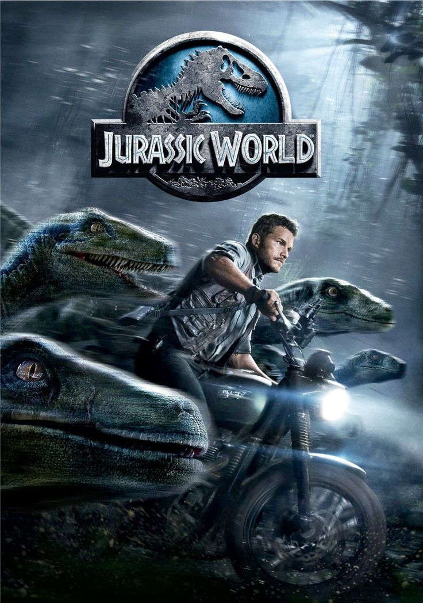

JURASSIC WORLD 1

SINOPSE
- Em um futuro onde o conceito de parque temático com dinossauros foi realizado, a Ilha Nublar agora abriga o Jurassic World, um enorme parque de diversões com dinossauros vivos. Para atrair mais visitantes, os cientistas criam um novo dinossauro híbrido, o Indominus rex. Quando a criatura escapa e causa o caos, os funcionários do parque lutam para salvar os visitantes e controlar a situação.